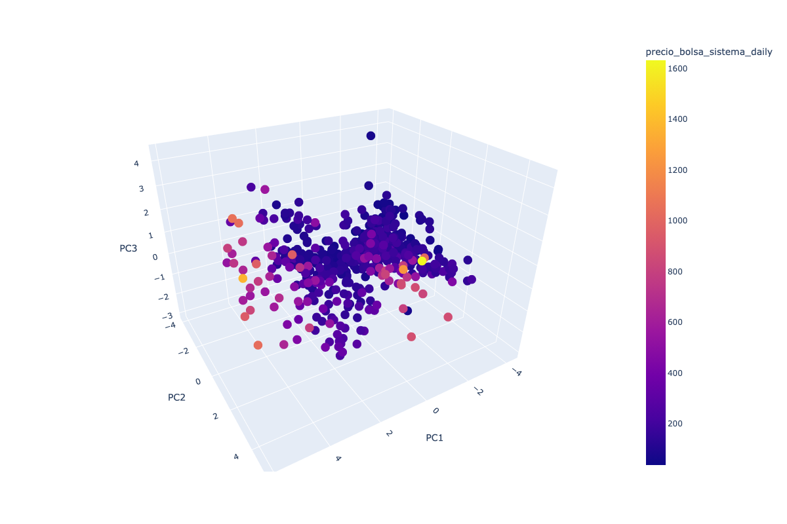

12. Conclusiones#
12.1. Extracción de Información#
12.1.1. Extracción de la información API REST XM SA ESP#
Descargar información desde una API REST implica obtener datos de un servicio web que utiliza la arquitectura REST (Representational State Transfer). Este proceso se realiza mediante solicitudes HTTP a los recursos proporcionados por la API, los cuales devuelven datos en formatos legibles por máquina, como JSON o XML.
En nuestro proyecto, utilizamos una API REST expuesta por la compañía de energía XM S.A. E.S.P., una empresa dedicada a la administración del mercado de energía mayorista y al desarrollo de soluciones y servicios de energía e información. Gracias a esta API, pudimos acceder a información detallada sobre el sistema eléctrico colombiano desde el año 2010 hasta abril de 2024, logrando extraer de la API 2.2 GB en 33 archivos JSON.
A continuación escribimos los pasos para desarrollar este procedimiento.
1. Obtener la documentación del API
2. Configurar la autenticación y autorización
3. Realizar una solicitud HTTP
4. Analizar la respuesta
5. Almacenar los datos
12.1.2. Carga de información en nube DigitalOcean a través de PREFECT#
Es muy útil utilizar Prefect para realizar automatización de tareas, integración de datos con escalabilidad, además nos da un monitoreo efectivo y utiliza notificaciones para conocer el estado del flujo y al ser compatible con una base de datos desplegada en nuestra nube en DigitalOcean, fue un factor decisivo para realizar la carga en la base de datos utilizando esta metodología. A continuación detallamos el procedimiento realizado para subir la información obtenida en archivos .JSON desde el API - REST.
Elegimos la plataforma en la nube para almacenar la información y configurar la base de datos.
Seleccionamos una base de datos en la nube que sea compatible con Prefect, en este caso decidimos colocarla en la nube DigitalOcean.
Configuración de la conexión a la base de datos en DigitalOcean
Creamos una cuenta en DigitalOcean y configuramos la instancia de base de datos. Luego, obtuvimos las credenciales y la información de conexión para conectarnos a la base de datos desde Prefect.
Instalamos y Configuramos PREFECT.
Instalamos Prefect mediante el comando pip install prefect en el entorno MiniConda. Después, configuramos Prefect con las credenciales y la información de conexión de la base de datos en la nube DigitalOcean.
Creación flujo en Prefect.
Un flujo en Prefect es una colección de tareas que se ejecutan en un orden específico. Para subir datos de archivos JSON a la base de datos en DigitalOcean.
Ejecución del flujo.
Mediante el comando “prefect run” o mediante la interfaz gráfica de usuario de Prefect, se da la realización de la ejecución del flujo.
Con este procedimiento lgoramos cargar los datos en DigitalOcean con PREFECT.
12.2. Transformación de la información#
El proceso de transformación es fundamental para convertir datos crudos en información útil y significativa. Durante este proceso, los datos extraídos de nuestra base de datos son limpiados, normalizados y enriquecidos para asegurar su calidad y coherencia.
Gracias a la transformación, hemos estandarizado la información del sistema eléctrico colombiano, eliminando redundancias y corrigiendo errores. El resultado es una base de datos robusta y fiable, cargada en una única tabla en la nube de AWS. Este proceso ha mejorado no solo la calidad de los datos, sino también su accesibilidad y usabilidad para análisis posteriores mediante el uso de gráficas.
Para este proceso utilizamos un análisis exploratorio de datos (EDA) y obtuvimos los siguientes resultados con nuestro set de datos.
El uso de EDA en la fase de transformación ha sido crucial para asegurar que nuestros datos sean de alta calidad, coherentes y listos para ser utilizados en análisis avanzados, lo cual optimiza significativamente los procesos de toma de decisiones basados en datos, a continuación detallamos las conclusiones de lo obtenido en este analisis exploratorio.
Mejora de la Calidad de los Datos: A través del uso de EDA, logramos identificar y corregir inconsistencias, valores atípicos y datos faltantes. Esto ha resultado en un conjunto de datos de mayor calidad y fiabilidad, esencial para análisis posteriores.
Detección de Patrones y Tendencias: El análisis exploratorio nos permitió descubrir patrones y tendencias dentro de los datos, proporcionando una comprensión más profunda del comportamiento del sistema eléctrico colombiano. Esta información es valiosa para la toma de decisiones informadas y el desarrollo de estrategias para la creación de analíticas a través de gráficas.
Optimización de la Estructura de Datos: Mediante EDA, pudimos determinar la mejor manera de estructurar y normalizar los datos. Esto facilitó la eliminación de redundancias y la estandarización de la información, resultando en una base de datos más coherente y organizada, posteriormente subida a una base de datos AWS.
Facilitación de Análisis Posteriores: El resultado final de la transformación es una base de datos robusta y fiable, cargada en una única tabla en la nube AWS. Esta base de datos está ahora bien preparada para análisis avanzados y la creación de visualizaciones gráficas que apoyen la toma de decisiones.
Reducción de Errores y Mayor Confiabilidad: La identificación y corrección temprana de errores durante la fase de EDA asegura que los análisis futuros se basen en datos precisos, reduciendo así la posibilidad de errores y aumentando la confiabilidad de los resultados obtenidos.
12.3. Carga de la información#
El uso de técnicas de machine learning y visualizaciones a través de Python ha permitido desarrollar un modelo predictivo robusto y fiable para prever el precio de la energía en Colombia. Este trabajo no solo contribuye al entendimiento de las dinámicas del mercado energético, sino que también ofrece una herramienta valiosa para la planificación y toma de decisiones futuras.
A continuación detallamos las conclusiones de este proceso.
Desarrollo de un Modelo Predictivo Eficaz. A través de técnicas de machine learning, logramos desarrollar un modelo capaz de predecir con precisión el precio de la energía en Colombia para los próximos años. La selección de características y el ajuste de hiperparámetros fueron esenciales para optimizar el rendimiento del modelo.
Visualización de Resultados Mediante Python. Utilizando Python, generamos diversas gráficas que ilustran claramente las predicciones del modelo. Estas visualizaciones facilitaron la interpretación de los resultados y permitieron identificar tendencias y patrones futuros en los precios de la energía.
Validación y Evaluación del Modelo. El proceso de validación cruzada y evaluación del modelo indicó que nuestras predicciones son fiables y precisas. Las métricas de rendimiento, como el error cuadrático medio (MSE) y el coeficiente de determinación (R²), confirmaron la eficacia del modelo.
Identificación de Factores Clave. El análisis de las características más influyentes en la predicción del precio de la energía permitió identificar los factores clave que afectan los precios. Esto no solo mejora la interpretación del modelo, sino que también proporciona información valiosa para la toma de decisiones estratégicas en el sector energético.
Proyecciones Futuras Confiables. Las predicciones realizadas indican una tendencia específica en los precios de la energía para los próximos años. Estas proyecciones son fundamentales para la planificación y gestión de recursos en el sector energético, ayudando a anticipar posibles fluctuaciones y ajustar estrategias en consecuencia.
Aplicación Práctica y Relevancia. El modelo predictivo desarrollado tiene una aplicación práctica significativa, ya que proporciona una herramienta útil para las empresas y entidades gubernamentales en la toma de decisiones informadas sobre políticas energéticas y gestión de costos.
Mejora Continua del Modelo. El proceso de machine learning es iterativo, y aunque los resultados obtenidos son prometedores, existe la posibilidad de mejorar continuamente el modelo mediante la incorporación de nuevos datos y el ajuste de técnicas avanzadas de machine learning.
12.4. Conclusiones de Machine Learning Supervisado#
Logramos construir un modelo de regresión para la predicción del precio de la energia en la bolsa nacional a partir de sus variables operativas usando XGBoost.
Logramos identificar las variables que mas aportan al precio a partir de este modelo.

A partir de este gráfico, podemos concluir que las variables que más influyen en la variabilidad del precio son, en orden ascendente:
volumen_util_energia_sistema_dailygeneracion_sistema_dailydisponibilidad_real_daily
Inicialmente, se esperaba que el consumo_combustible_daily fuera la variable que más impactara en el precio. Sin embargo, debido a que la matriz energética colombiana depende en un 70% de la generación hidráulica, el volumen útil de los embalses se convierte en la variable que más influye en los precios.
12.5. Conclusiones Machine Learning No Supervisado#
Usando la tecnica de Analisis de Componentes Principales, logramos reducir la dimensionalidad de los datos encontrando las zonas de operacion con precio mas alto.


Identificando 3 clusters.